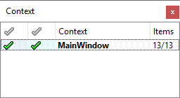

Selecting context to translate
The Context view lists the contexts in which strings to be translated appear. The column labeled Context lists the context names in alphabetical order. Each context is the name of a QML type or a subclass of QObject.

A context for QObject itself contains strings passed to the static function QObject::tr().
An <unnamed context> contains strings that are not in a subclass of QObject.
The following icons indicate the current translation state for each context:
| State | Icon | Description |
|---|---|---|
| Accepted/Correct |  | All strings in the context have been translated, and all the translations passed the validation tests. |
| Accepted/Warnings |  | All strings in the context have been translated or marked as translated, but at least one translation failed the validation tests. In the Strings view, you can see which string failed the test. |
| Not Accepted |  | At least one string in the context has not been translated or is not marked as translated. |
| Obsolete |  | None of the translated strings appears in the context any more. This usually means the context no longer exists in the application. |
The Items column displays the total number of translatable strings in the context and the number of translated strings, separated by a slash (/). If the numbers are equal, all the translatable strings in the context have translations.